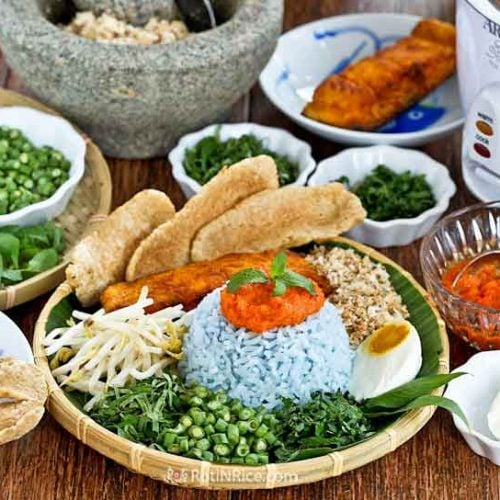
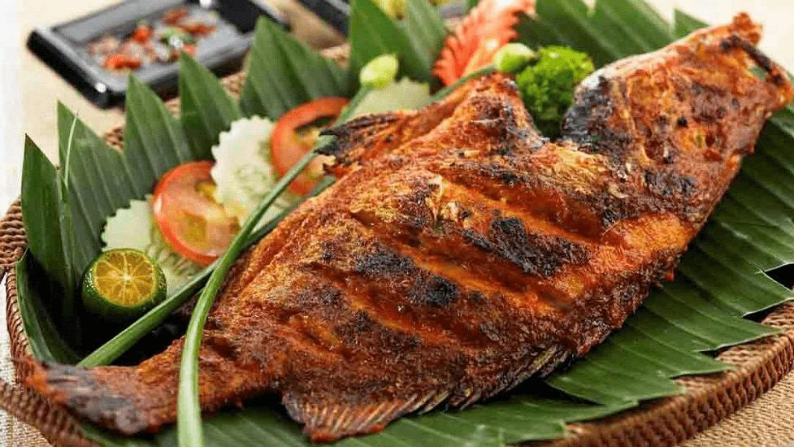
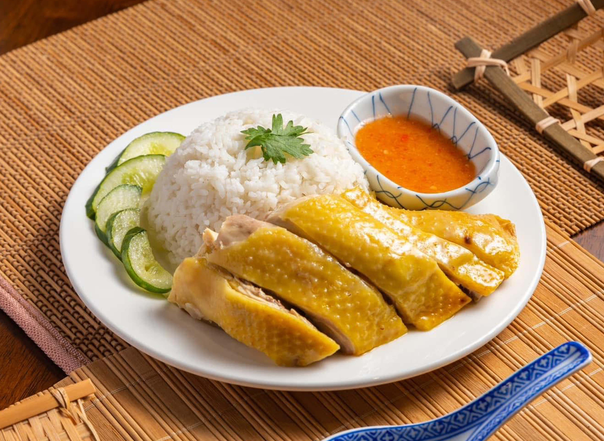
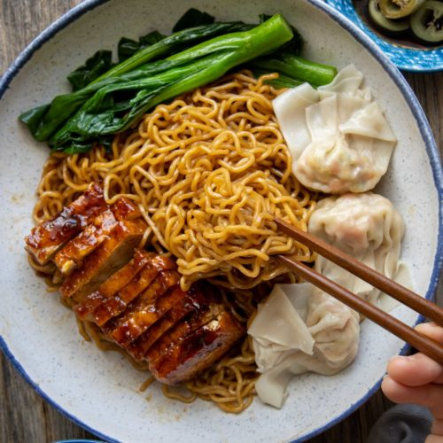
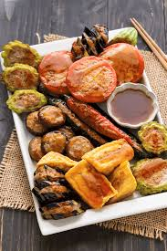
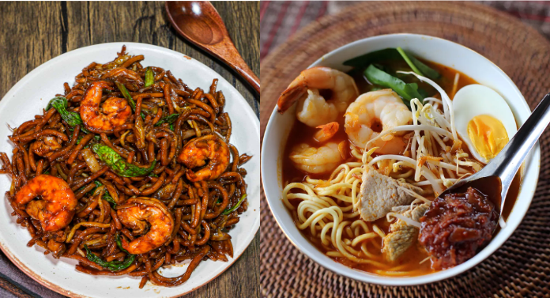
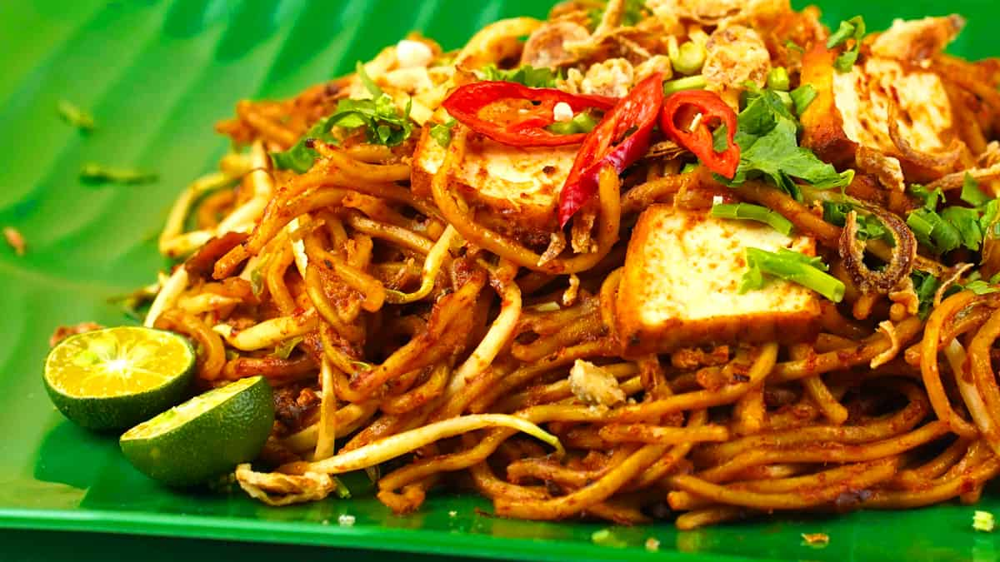
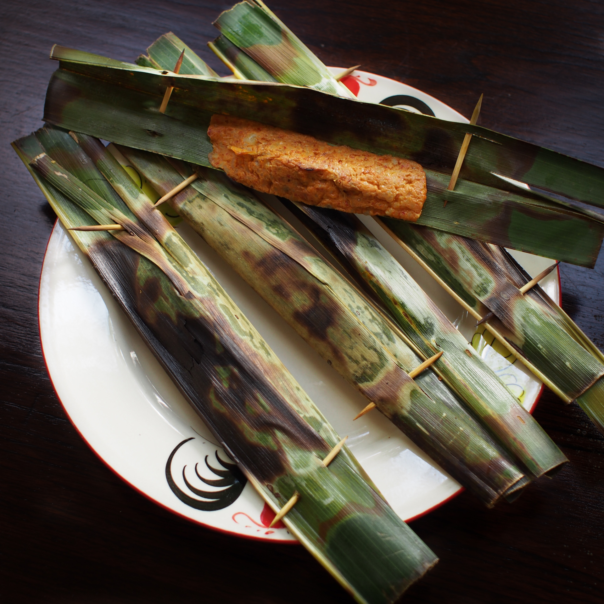
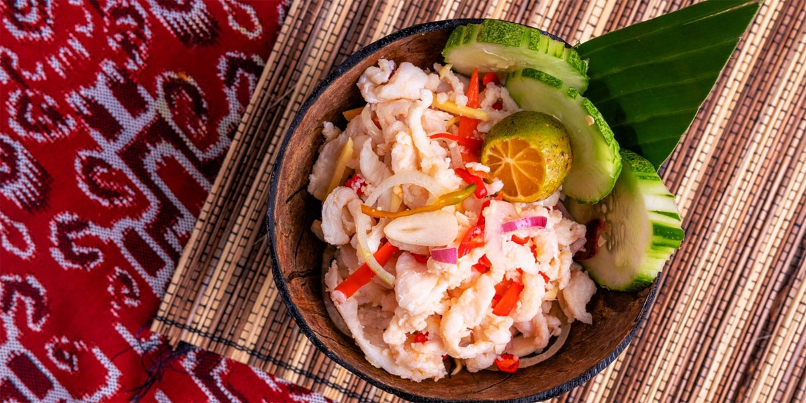
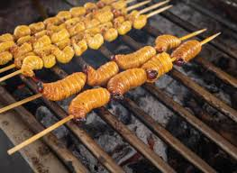

Malay Cuisine
Chinese Cuisine
Indian Cuisine
Baba-Nyonya
Cuisine
Orang Asli, Sabah & Sarawak Natives
Malay Cuisine

Nasi Lemak
Features:
- National dish, Coconut rice wuth anchovies, Peanuts, Egg, Cucumber, Sambal

Rendang
Features:
- Slow-cooked beef or chicken with coconut milk and spices

Satay
Features:
- Grilled skewered meat with peanut sauce

Laksa
Features:
- Spicy noodle soup (varies by region, e.g. curry laksa, asam laksa)

Nasi Kerabu
Features:
- Blue butterfly pea flower rice served with herbs, salted egg, grilled fish

Ikan Bakar
Features:
- Spicy grilled fish wrapped in banana leaf
Chinese Cuisine

Hainanese Chicken Rice
Features:
- Poached chicken with fragrant rice

Char Kway Teow
Features:
- Penang-style stir-fried flat noodles with prawns, sausage, eggs

Bak Kut Teh
Features:

Wantan Mee
Features:
- Egg noodles with char siew (BBQ pork) and dumplings

Pan Mee
Features:
- Handmade noodle soup with anchovy broth

Yong Tau Foo
Features:
- Stuffed tofu/vegetables with fish or meat paste

Hokkien Mee
Features:
- Dark soy sauce noodles (Kuala Lumpur) or prawn noodle soup (Penang)
Indian Cuisine
Roti Canai
Features:
- Flaky flatbread served with dhal or curry

Teh Tarik
Features:
- National drink, pulled milk tea with frothy top

Banana Leaf Rice
Features:
- Rice with assorted curries and vegetables served on banana leaf

Murtabak
Features:
- Stuffed pancake with meat, egg, onions

Mee Goreng Mamak
Features:
- Spicy stir-fried noodles by Indian-Muslim hawkers

Rojak Mamak
Features:
- Mix of fried items, noodles, fruits with peanut sauce

Thosai
Features:
- Fermented rice pancake, served with coconut chutney or curry
Baba-Nyonya Cuisine

Nyonya Laksa
Features:
- Curry coconut noodle soup

Asam Laksa
Features:
- Sour-spicy fish-based noodle soup

Ayam Pongteh
Features:
- Soy-braised chicken with potatoes

Nyonya Kuih
Features:
- Colorful bite-sized cakes made with glutinous rice, coconut, pandan

Otak-Otak
Features:
- Spiced fish paste grilled in banana leaf
Orang Asli, Sabah & Sarawak Natives

Hinava(Kadazan-Dusun, Sabah)
Features:
- Raw fish marinated with lime juice, ginger, chili

Linopot(Sabah)
Features:
- Rice wrapped in leaves for portability

Umai(Sarawak, Melanau)
Features:
- Raw fish salad with onions, chili, lime

Pansoh (Sarawak Iban)
Features:
- Bamboo-cooked rice with meat and herbs

Sago Worms
Features:
- Traditional protein source, eaten roasted or fried